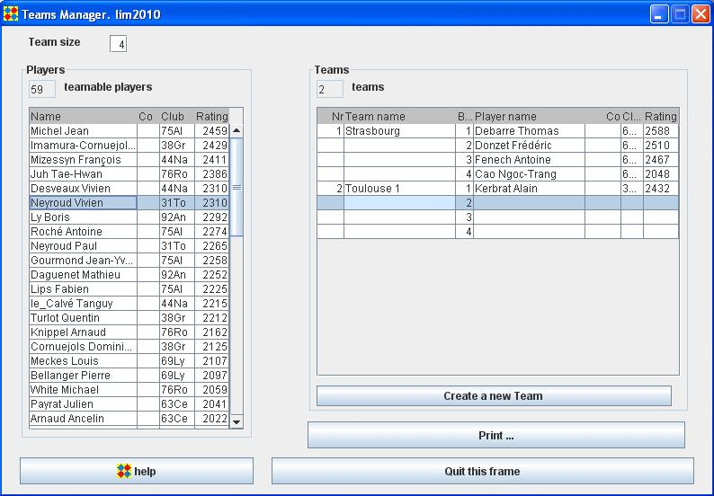
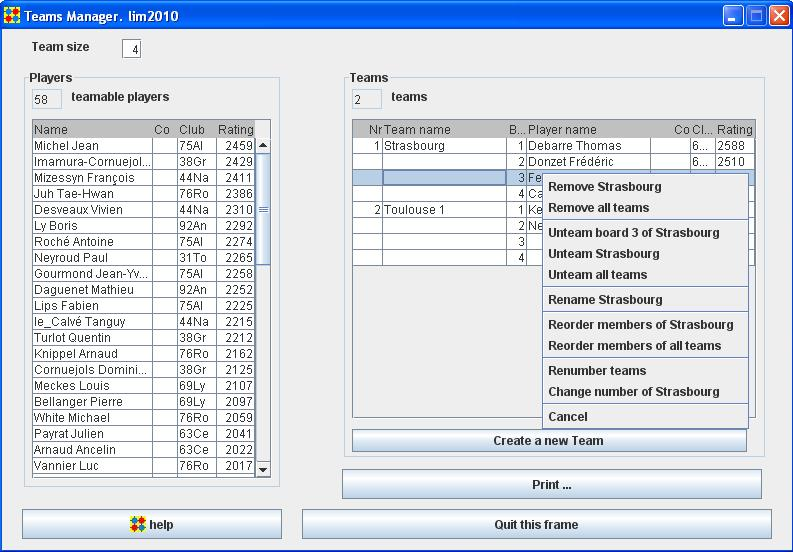

Teams Manager frame
With the Teams manager frame, you can create teams, affect players to teams and edit teams.
Create a new team
Click the "Create a new Team" button, choose a name for the team and click OK

Affect players to teams
Select a player from Players panel, then Drag and drop it to the desired board of the desired team

Edit teams
Right-click in the Teams panel and choose a menu item
